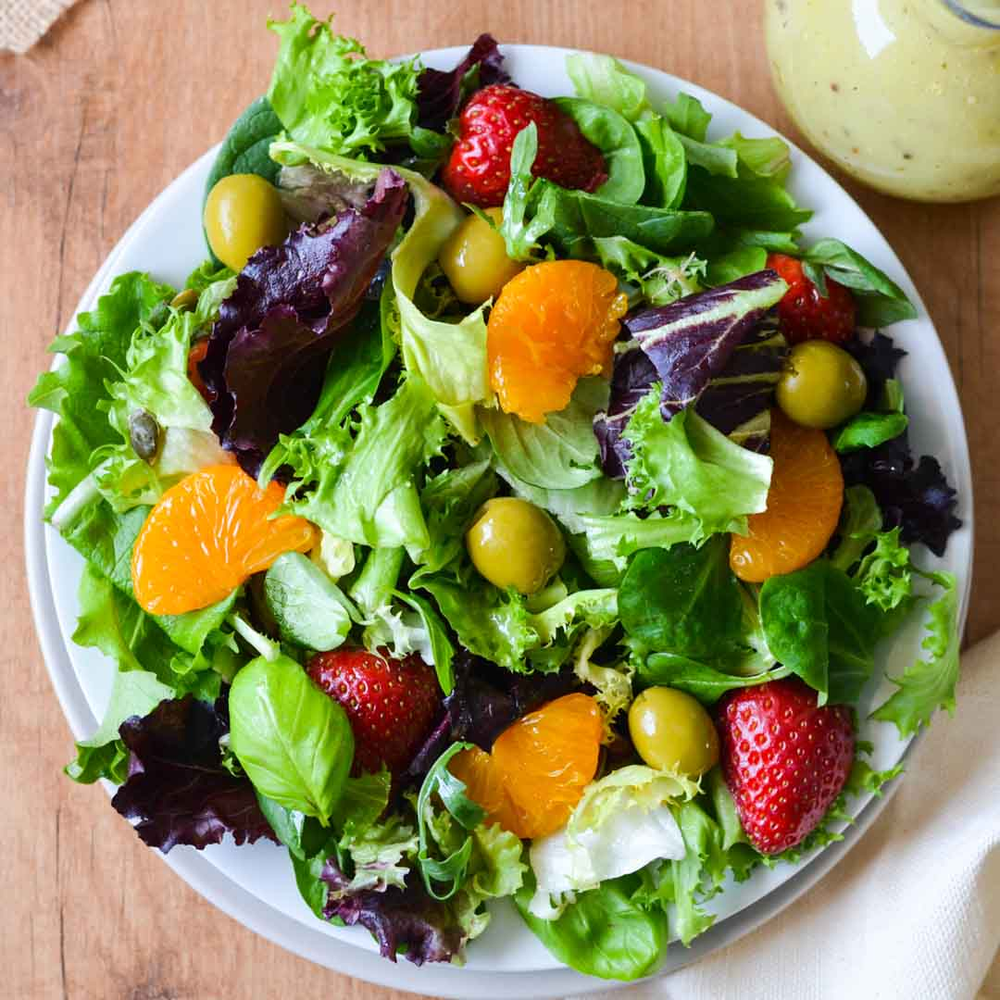

Mixed Green Salad

Description
Ingredients
- Mixed greens (lettuce, spinach, arugula, etc.)
- Cherry tomatoes, halved
- Cucumber, sliced
- Red onion, thinly sliced
- Balsamic vinegar
- Extra-virgin olive oil
- Dijon mustard
- Honey
- Salt and pepper
Steps
- Wash and dry the mixed greens and arrange them on a serving platter or individual plates.
- Scatter the cherry tomatoes, cucumber, and red onion over the greens.
- In a small bowl, whisk together the balsamic vinegar, olive oil, Dijon mustard, honey, salt, and pepper to make the dressing.
- Drizzle the dressing over the salad and toss to coat.
- Serve immediately.